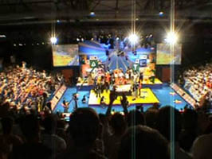
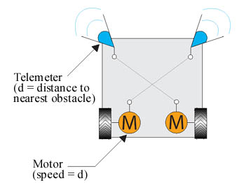
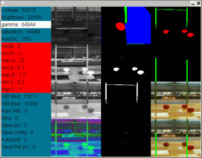

| 1. The Contest: international robotics contest
- Since 1998, Eurobot is an international robotics contest.
- Eurobot takes place in Europe but also welcomes countries from other continents.
- 2004: 21 countries, represented by 250 teams.
- New rules each year.
|
 |
| 2. Rules: rugby
match
- 2 robots, 14 rugby balls, 2 random palm trees on the playground.
- 90 seconds matchs.
- The winner is the robot that has put more balls in the blue area or in the net.
- The robots can carry only 3 balls simultaneously.
|
|
| 3. The Robot: main components

|
| 4. Movements: a reactive robot
- This robot does not assume it is working on the Eurobot's board, and
therefore can evolve in an unknown environment.
The best trajectory is calculated in real
time according to:
- the distances given by the 11 telemeters
- the distances of the balls and trees given by the camera
|
 |
|
|
5. 3D Simulator: testing
in good conditions
- A 3D simulator has been developped in C++ and OpenGl in order to check the theorical robot's behaviors.
- This simulator allows us to develop the robot's AI software when the real robot is not functionnal.
|
| 6. Image processing: balls and trees
- Thanks to the video camera, the robot is able to locate red balls and to subsequently
head on towards the nearest red ball (blue areas are also detected in order to avoid them).
- This robot can also avoid green trees according to their distance and direction.
- As shown on the right hand side, this program has been developped in C++ to set camera settings and to
check image processing results.
|
 |
|
7. The robot movies: watch it working !
|
|
8. More movies
|
|
(WMV format: use Windows Media Player or download WMV codec)
|
|
9. For more details:
|
|

 Robot hangs out again
Robot hangs out again